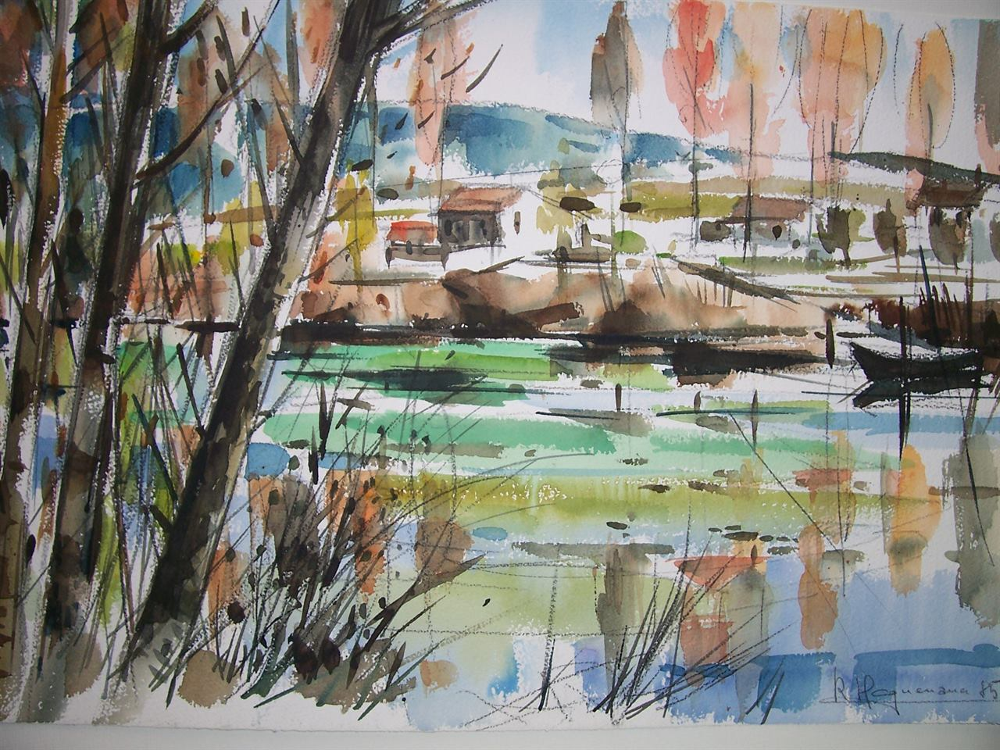

Galerie en ligne
Des œuvres à découvrir,
simplement.
Peintre et aquarelliste, René HAGUENAUER est né à Wissembourg en 1922. Élève de l’École des Arts Décoratifs de Périgueux en 1941 puis de l’École des Beaux-Arts de Nancy, il expose dès 1945 avec un groupe d’artistes. En 1946, la Galerie Mosser lui consacre une exposition particulière. Il peint les paysages de Lorraine, de Bretagne et de Provence, ainsi que des natures mortes, dans des tons clairs et transparents, expressifs et puissants. Sa facture s’apparente à celle des néo-cubistes.
Explorer les œuvresUn espace de découverte — aucune vente en ligne.

À découvrirUne œuvre parmi d’autresCollection
Les œuvres
62 œuvres à découvrir
Aucune œuvre ne correspond à ces filtres.
L’artiste
Biographie
Né en 1922 à Wissembourg en Alsace, il habite Nancy lors de l’occupation allemande en 1940.
À 18 ans, il est dénoncé comme ‟Alsacien-Lorrain”, enrolable dans l’armée allemande. Réfugié à Périgueux, en 1941, il prend des cours de dessin à l’école des Arts Décoratifs de cette ville. De retour à Nancy, il suivra des cours libres à l’École de Beaux-Arts. Il se libère rapidement de toutes tendances pour faire sa propre expérience picturale et ne cessera plus dès lors de dessiner et de peindre, jusqu'à sa disparition en 2010.
Dès 1949, il découvre la côte bretonne à vélo avec quelques amis peintres : Couillard, Lallevé … Ils en ramèneront matière à une première exposition, et un goût prononcé pour les paysages bretons et les marines.
Toujours à vélo, il parcourt aussi la Provence, pour son voyage de noce avec sa jeune épouse Nicole, et dans les pas de Cézanne et de Van Gogh, découvre la montagne Sainte-Victoire, les Alpilles et les Baux. Les vacances familiales en seront longtemps influencées.
Paysagiste, chantre de la Bretagne, de la Provence et du pays Lorrain, il dessine ou peint à l’aquarelle d’après nature, des paysages naturels, mais aussi des paysages industriels ; usines sidérurgiques, scènes de péniches sur le canal, ou encore les cimetières de bateaux dans les Abers Bretons ou le quai des Phares et Balises à Brest.
Il expérimente aussi tous les types d’art graphique, bien sûr les dessins au fusain ou aux feutres, qui serviront pour ses œuvres futures, la peinture à l’huile, remplacée progressivement par la peinture acrylique, mais aussi l’aquarelle, qui après disparition totale du dessin, donnera des œuvres d’une grande sensibilité.
Artiste prolifique, il peut réaliser plusieurs dizaines de croquis, dans un après-midi, qui lui serviront, l’automne venu, pour peindre souvent des tableaux de grandes dimensions.
Il peint aussi des aquarelles d’après nature ; exercice difficile sous le chaud soleil de Provence, tout est dans la rapidité d’exécution, avant que les premières touches de couleurs ne sèchent.
Il s’attelle aussi à l’art difficile de la gravure, avec burin et pointe sèche sur cuivre, il utilise aussi l’eau-forte sur zinc, lino et bois sous forme d’ex-libris.
Dans les années 70, les tableaux assez sombres de la première période sont remplacés, sous l’influence de la lumière provençale, par des œuvres plus colorées et plus chaude dans un style qualifié par un critique de néo-cubiste.
René Haguenauer fait partie dès 1947 de l’association des ‟Artistes Lorrains”, dont il sera un des membres du comité de sélection. Il participe régulièrement au Salon des Artistes Lorrains, qui lui décernera le Prix des Artistes Lorrains et lui rendra un hommage lors de l’exposition de 2011.
Dés 1950, il expose souvent seul ou en groupe, dans les galeries nancéennes, en particulier les galeries Mosser, Daum, Corbin et régulièrement au Club des Arts, près de la place Stanislas, réservés aux membres des Artistes Lorrains.
À partir de 1970, il exposera dans toute la région Lorraine, Verdun, Lunéville, Saint Dié, … et aussi en Allemagne toute proche, à Prun. Il remportera ainsi de nombreuses récompenses dans toute la région.
À propos de la galerie
L’art, pour le plaisir de le partager.
Cette galerie rassemble les œuvres de René HAGUENAUER et invite chacun à les découvrir et à les apprécier.
Ce site est une galerie de présentation. Aucune œuvre n’y est proposée à la vente.